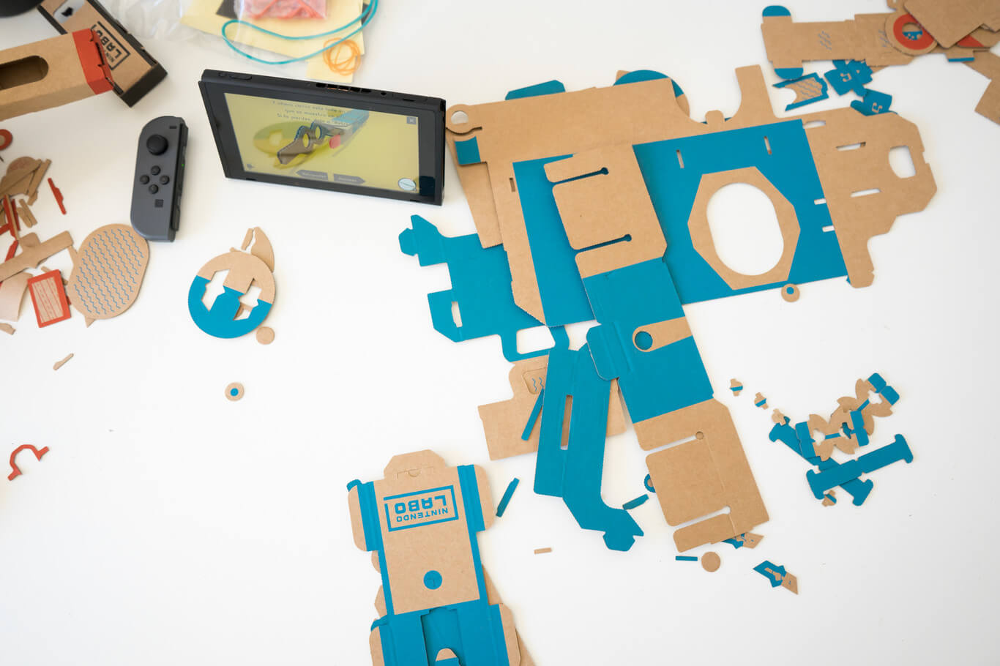

Aunque nada indica que los adultos no puedan sacar partido y diversión a Nintendo Labo, el juego creativo de Nintendo basado en placas de cartón combinadas con los mandos y pantalla de la consola Switch tiene a los niños en su punto de mira principal
Con ellos hemos pasado una semana para contaros cómo es la experiencia de que ellos monten los kits, su potencial pedagógico y qué piensan ellos de Nintendo Labo.
Nunca hay que dar por acabada a Nintendo. La salida hace poco más de un año de la Nintendo Switch, con muchas dudas, supuso un golpe sobre la mesa, una brisa renovada que, acompañada de dos grandes juegos que no se pueden jugar en otra consola (Mario Odissey y el tremendo Zelda), han devuelto a Nintendo a un lugar destacado en listas de ventas y también los deseos de mayores, y ojo, pequeños.
De ellos da la sensación de que apenas nadie se preocupa en el mundo del juego. A los más pequeños va dedicada, aunque no exclusivamente, su última idea loca: Nintendo Labo. Con esa concepción de algo diferente, niños, mucho movimiento maker y la libertad que uno siente con Nintendo, hemos pasado una semana con Nintendo Labo y niños para contaros cómo es la experiencia de que monten, jueguen y sueñen con algo tan grande como que el juego y su propia diversión pueden crearla ellos.
Tras la enésima decepción de la semana - ¿quién me mandaría adelantarles que nos traerían Nintendo Labo para probar? - los peques de la casa vuelven a sus naves de Lego creadas por ellos mismos. Pero la tranquilidad dura poco. El timbre de la puerta vuelve a sonar y tanto A como J se lanzan a abrir la puerta con la esperanza de que ese nuevo paquete que llega a casa sea por fin Nintendo Labo.
